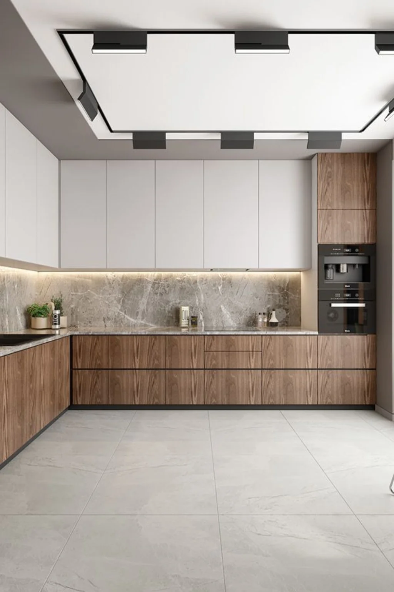
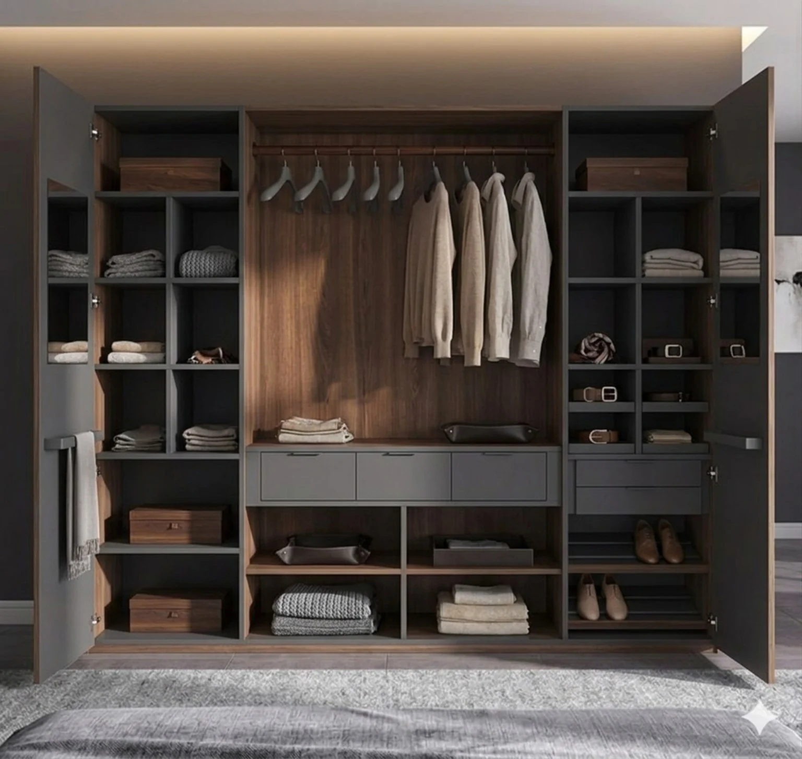
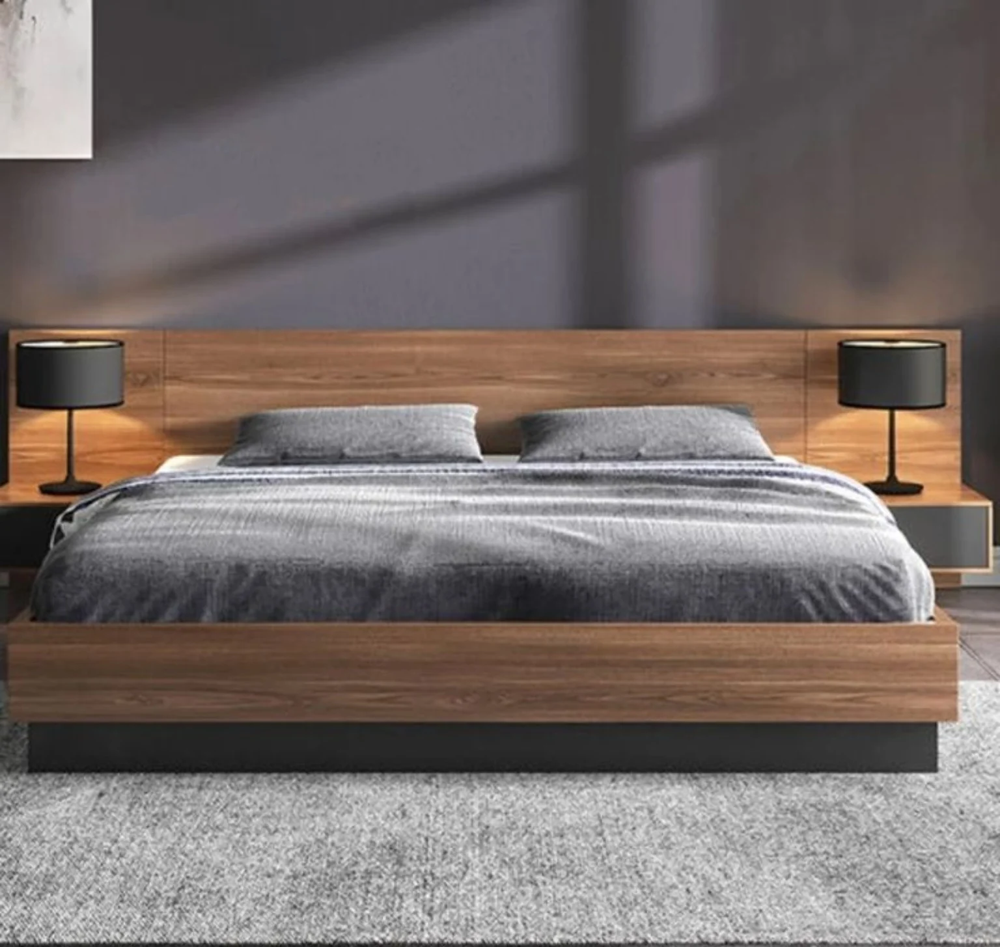
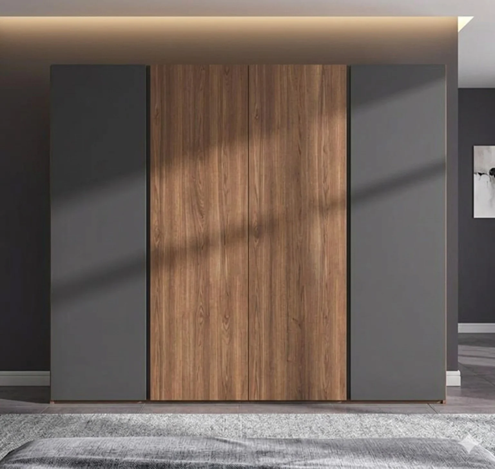
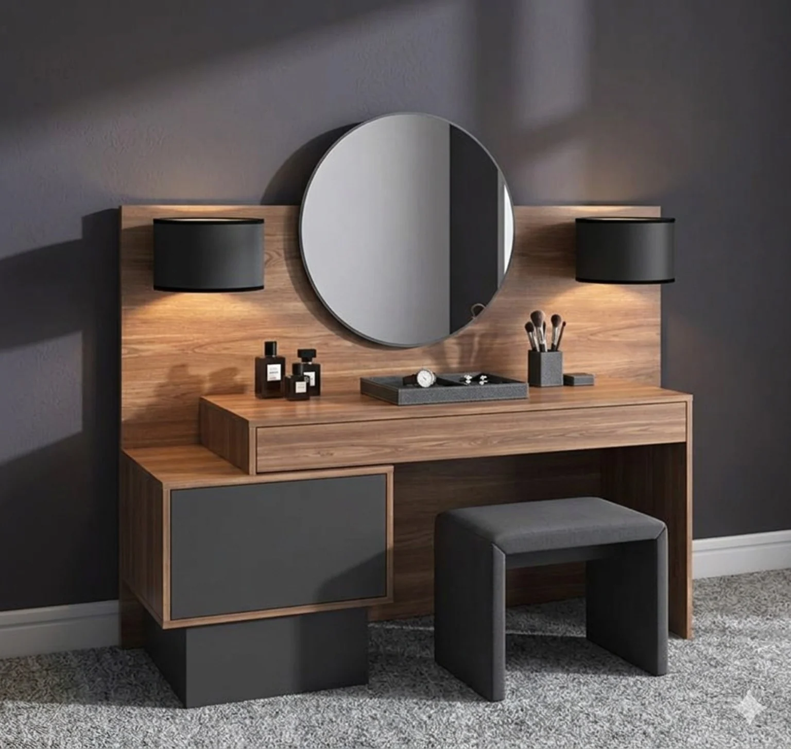
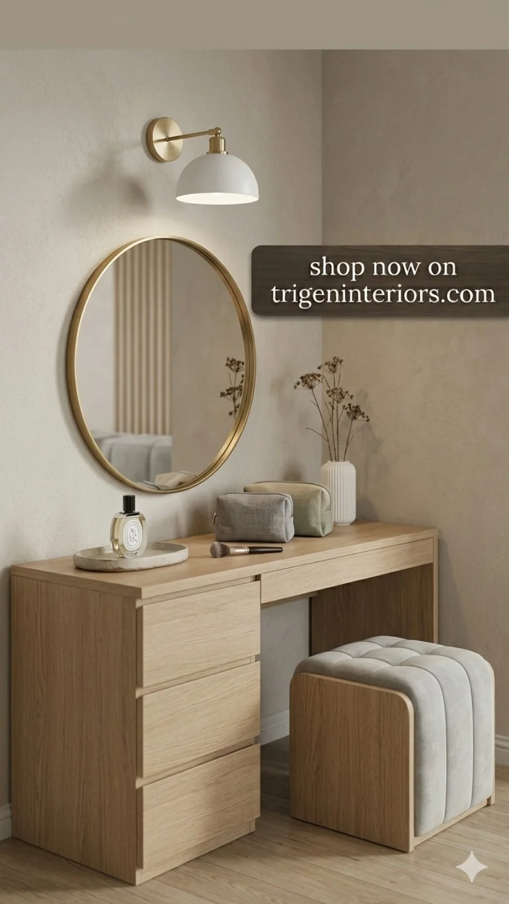
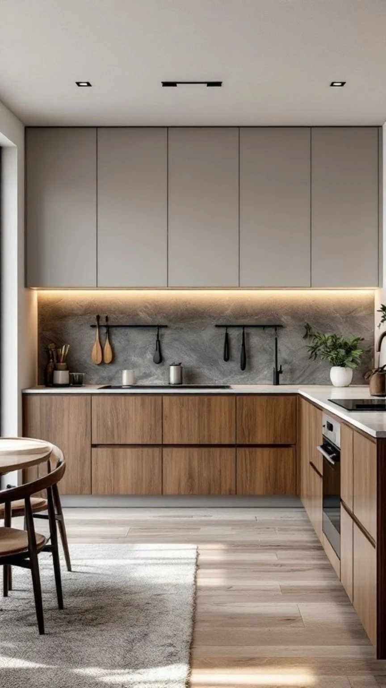
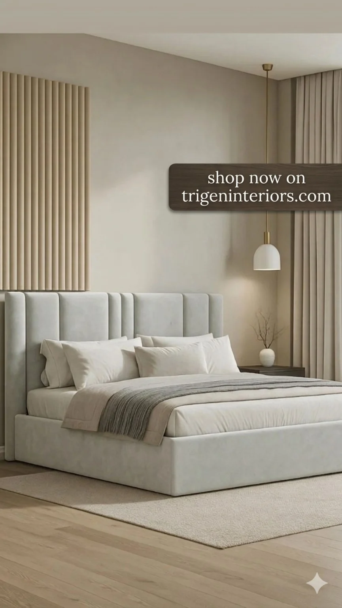

K
Kitchen Manufacturing
Custom kitchen cabinets, modern kitchens, fitted kitchens and kitchen remodeling with professional installation.
Explore Kitchens →Custom kitchens, wardrobes, wooden doors, office furniture, café chairs and complete interior projects — designed, manufactured and installed in Karachi.

From a single custom product to a complete interior project, Trigen Interiors combines design, manufacturing and installation.
Custom kitchen cabinets, modern kitchens, fitted kitchens and kitchen remodeling with professional installation.
Explore Kitchens →Built-in wardrobes, fitted wardrobes, walk-in wardrobes and custom storage designed around your space.
Explore Wardrobes →Custom wooden doors, interior doors, main doors, frames and door fitting for residential and commercial projects.
Explore Doors →Made-to-measure furniture for bedrooms, offices, cafés, retail spaces and commercial interiors.
Custom café chairs, seating and furniture manufactured to suit your concept, dimensions and interior.
Custom interior manufacturing, carpentry, partitions, TV/LCD walls and installation for complete projects.
Explore examples of kitchens, wardrobes, bedroom furniture and custom pieces. Every project can be adapted to your measurements and requirements.







Need something that is not a standard size? We manufacture customized products and project-specific furniture according to measurements, materials, finishes and design requirements.
Share your measurements, drawings, inspiration or project brief.
We develop a practical concept around your space and use.
Our custom manufacturing approach lets you specify size, finish and details.
Professional fitting and installation bring the finished design together.
Trigen Interiors works across residential and commercial spaces in Karachi, with customized manufacturing at the center of the service.
Products are adapted to your actual space rather than forcing your project into standard dimensions.
Kitchens, wardrobes, doors, office furniture, café chairs and custom interior furniture under one brand.
We can manufacture individual products or coordinate furniture and interior elements for a complete project.
Send your requirements, measurements, reference images or drawings. We'll discuss the right manufacturing and installation solution for your space.
Yes. We manufacture custom kitchen cabinets and fitted kitchens according to measurements, layout, finish and project requirements, and provide installation.
Yes. We manufacture custom wardrobes, built-in wardrobes, fitted wardrobes and walk-in wardrobe solutions with installation.
Yes. We provide custom wooden doors and related frames and fitting for residential and commercial requirements.
Yes. We manufacture customized furniture and café chairs according to the required design, dimensions and project concept.